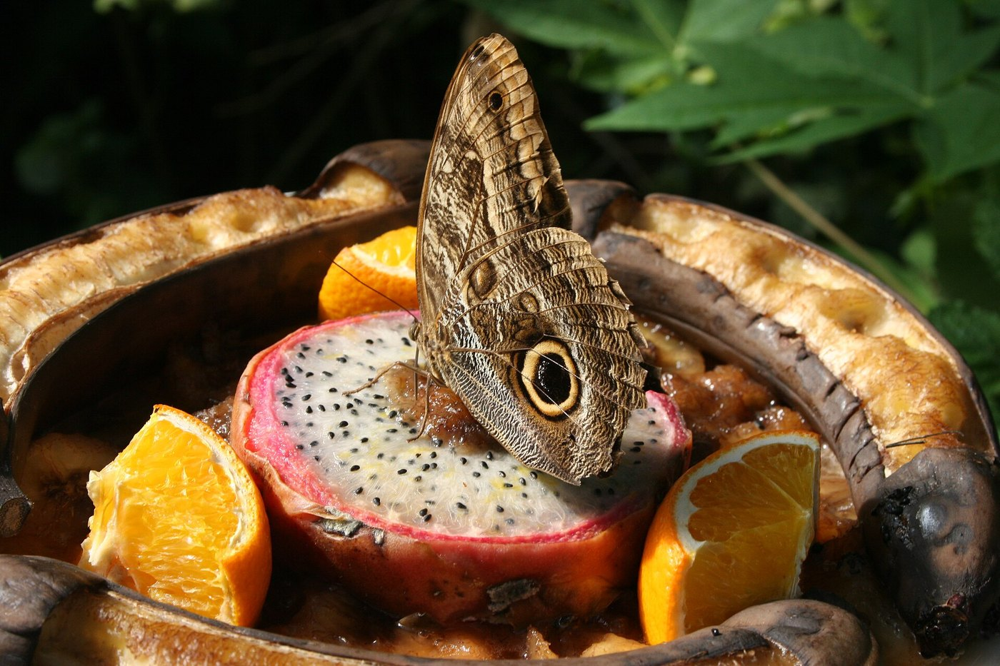
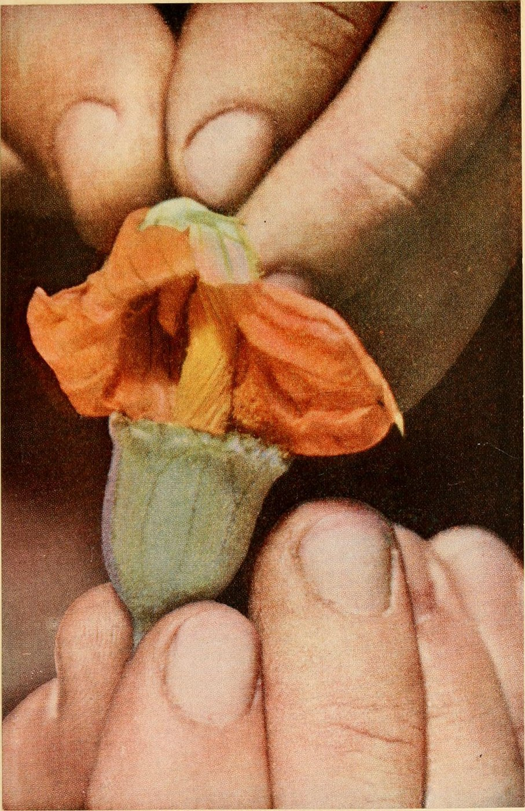

THE MYSTERY OF THE NIGHT-BLOOMING HYLOCEREUS.
Indigenous to the tropical rainforests of Central America, the pitaya cactus climbs forest canopies with aerial roots, bursting into giant fragrant white blossoms for a single ephemeral night.
THE SINGLE-NIGHT BLOOMING SPECTACLE
The Hylocereus blossom is among the largest and most fragrant flowers in the plant kingdom, measuring up to 30 centimeters in diameter with silky ivory petals and golden stamens. In nature, it relies exclusively on nocturnal hawkmoths and nectar bats for pollination before wilting by dawn.
At Dragonfruit Joy, our horticultural team conducts delicate hand-pollination beneath starlit skies, transferring pollen from vigorous cultivars to ensure dense seed set, symmetrical fruit formation, and maximum betacyanin concentrations.

SUSTAINABLE AGRO-ECOLOGICAL PRACTICES
Our farming philosophy harmonizes modern horticultural telemetry with organic soil stewardship.

ORCHARD 01Vertical Trellis Architecture
Reinforced central concrete posts allow succulent cactus vines to drape outward into umbrella crowns, maximizing sunlight interception.

HORTICULTURE 02Precision Hand Pollination
Using sterilized camel-hair brushes, each blossom receives cross-cultivar pollen within its three-hour nocturnal viability window.
Germplasm Nursery Study
Climate-controlled research greenhouse propagating disease-resistant heirloom cultivars with high natural Brix sugar yields.